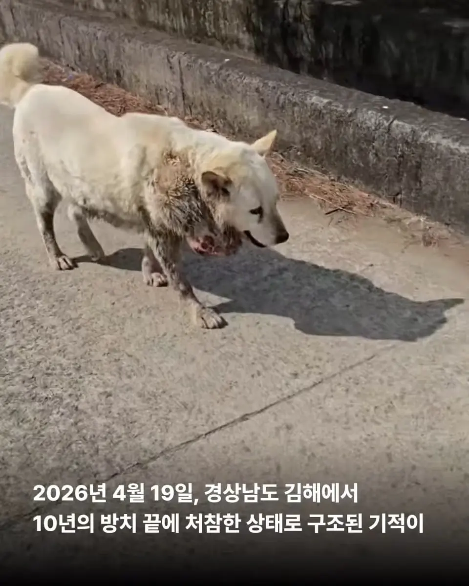
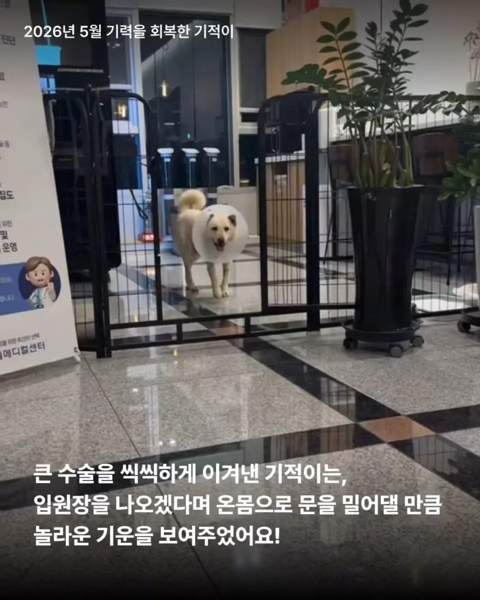
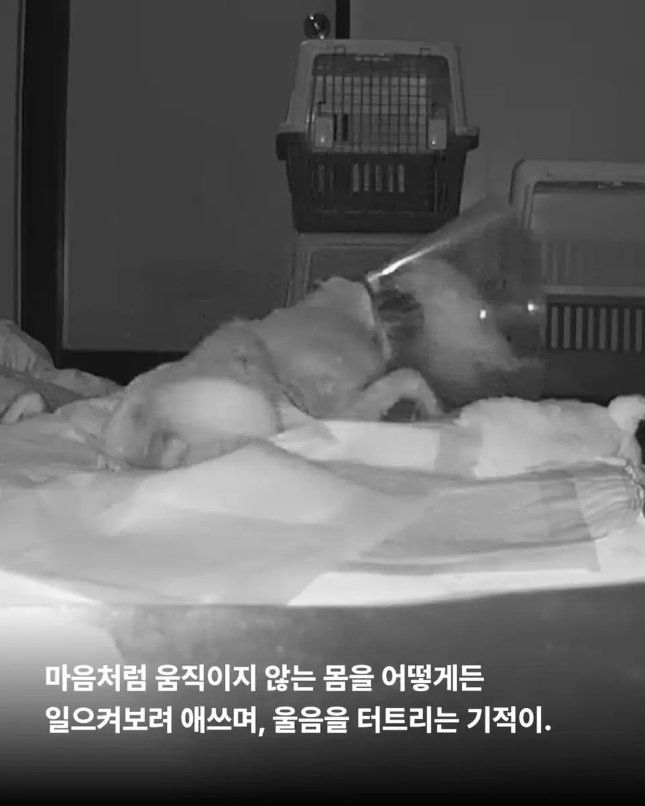
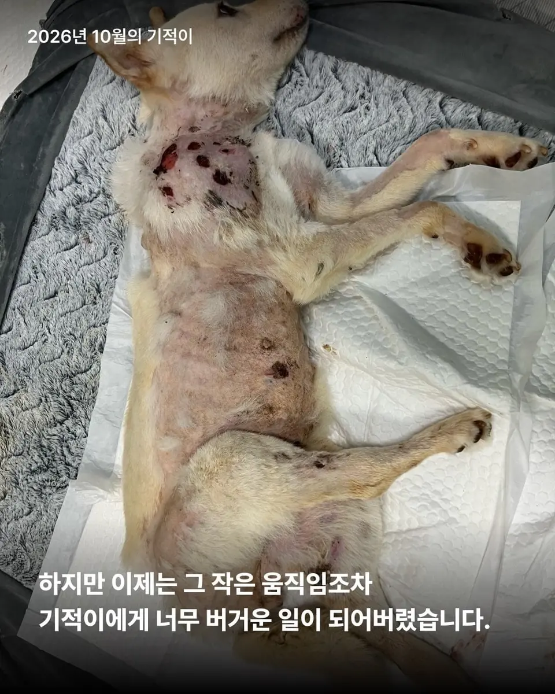
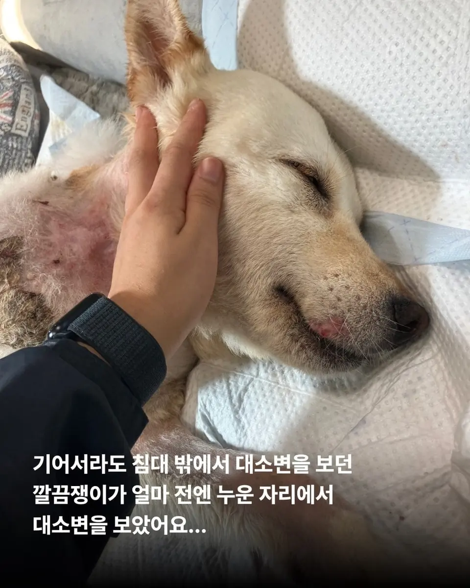

구조 동물 소식
사람을 가장 사랑한 개, 사람에게 가장 외로웠던 개

기적이가 많이… 아픕니다.
그러니 부디 조금 길더라도 기적이의 이야기를 들어주세요.
기적이는 지독히도 사람을 사랑하는 아이예요.
기적이를 지독히도 외롭게 만든 건 사람인데 말이죠.

지난 4월, 10년의 방치 끝에 구조된 기적이.
구조 당시 믿기 어려울 만큼 거대한 종양이 목에 매달려 있었습니다.


그토록 아픈 몸으로도 누군가 손을 내밀면,
마치 평생 그 손길 하나만을 기다려온 것처럼
힘겨운 몸을 기대어 오곤 했습니다.

목에 매달린 종양을 제거하고 나서는
기적이에게도 이제 좋은 날들이 시작될 줄 알았습니다.
수술을 막 마친 몸으로 입원장 밖에 나오겠다며
온몸으로 문을 밀어대고,
붕대를 칭칭 감은 채 씩씩하게 걸어 다니던 기적.

그 힘겨운 몸 어디에 그런 힘이 숨어 있었을까요.
그때만 해도 기적이가 다시 걷는 모습을
이토록 그리워하게 될 줄은 몰랐습니다.



기적이는 조금씩 걷는 힘을 잃었고,
끝내 스스로 일어서지 못하게 되었습니다.




그래도 남은 힘을 끌어모아 기어서라도 침대 밖으로 나가 대소변을 보던 깔끔쟁이.
불편한 몸을 이리저리 뒤척이며 제 힘으로 편한 자리를 찾기도 했습니다.
그런데 이제는 그마저도 할 수 없습니다.
누군가 몸을 돌려주지 않으면 자세조차 바꿀 수 없고,
누운 자리에서 대소변을 봅니다.

한때 온몸으로 문을 밀어대던 기적이에게
이제는 제 몸을 돌릴 힘조차 남아 있지 않습니다.
그런데 기적이는 오늘도 스스로 밥을 먹습니다.
사람이 다가오면 여전히 그 크고 맑은 눈을 반짝입니다.
기적이의 몸에서는 하나둘 힘이 사라져 가는데,
사람을 바라보는 눈빛만은 조금도 흐려지지 않았습니다.

그 눈을 보고 있으면 자꾸만 억울해집니다.
10년을 외롭게 살다가 이제야 사랑받기 시작했는데.
이제야 누군가의 손길을 하염없이 기다리지 않아도 되는데.
왜 기적이에게는 그 평범한 행복조차 이토록 짧게 허락되는 걸까요.

기적이에게 여러분의 1분을 내어주세요.
기적이의 이름을 불러주세요.
사랑한다고, 아주 많이 사랑한다고 말해주세요.
사람을 너무나도 사랑하는 기적이가
남은 시간만큼은 세상에서 가장 커다랗고, 많은 사랑을 받을 수 있도록.
부탁드립니다.
세상에서 가장 예쁜 우리 기적이.
정말 사랑한다, 우리 아기. 🤍
#위액트기적 #김해종양백구